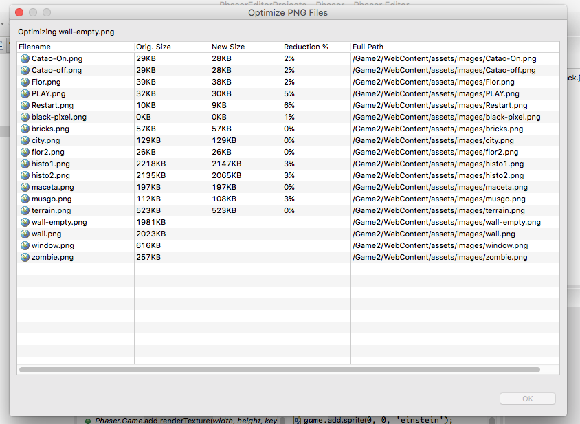
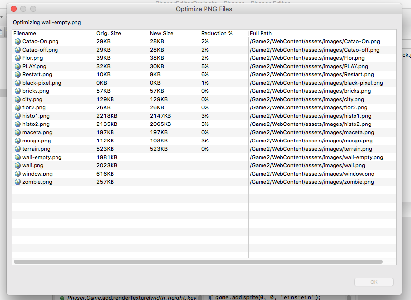

Optimize The PNG Image Files¶
Phaser Editor provides a simple utility based on the well known OptiPNG tool to reduce the file size of the PNG images. It is very important that you keep the file size of your game as small as possible, it improves the game loading speed.
To optimize the PNG files you should first select the files or the folder of the files in the Project Explorer, then click the Optimize PNG button in the main toolbar or open the context menu and select the Optimize selected PNG files option.
It opens a dialog with the progress of the optimization process.
 

Settings¶
You can change the level of compression in the preference page of the optimizer: Preferences > Phaser Editor > Optimize PNG.